지난 9월 27일부터 10월 3일까지 제4회 카자흐스탄 평화기행을 다녀왔습니다. 알마티에서 시작하여 우슈토베를 방문하고, 고려문화원에서는 그곳에 살아가는 고려인들의 이야기를 들었습니다. 낯선 땅을 찾아가는 여정이었지만, 그곳에서 들은 이야기들은 결코 낯설지 않았습니다. 오래전 고향을 떠나야 했던 이들의 삶이었고, 돌아오지 못한 사람들의 이야기였으며, 오늘을 살아가는 후손들의 이야기였습니다.
1937년, 수많은 고려인이 삶의 터전을 빼앗긴 채 중앙아시아로 강제 이주되었습니다. 낯선 땅에서 겨울을 견디고, 황무지를 일구며 다시 삶을 시작해야 했습니다. 그로부터 긴 세월이 흘렀습니다. 이제 그 역사를 몸으로 기억하는 어르신들은 점점 줄어들고 있습니다. 그분들이 세상을 떠나시면 우리가 미처 듣지 못한 이야기들도 함께 사라질지 모릅니다.
이번 기행에서 제 마음에 오래 남은 것은 바로 그 사실이었습니다. 우리가 찾아가야 할 곳은 단지 먼 나라의 유적지가 아니라, 아직 기억이 살아 있는 사람들의 곁이라는 사실입니다.
“우리가 찾아가야 할 곳은 먼 나라의 유적지가 아니라, 아직 기억이 살아 있는 사람들의 곁입니다.”
우리 법인은 카자흐스탄 박박티 마을에 고려인 기억박물관과 공동체센터를 세우는 일을 준비하고 있습니다. 거창한 건물을 세우는 것이 먼저는 아닙니다. 그곳에서 살아온 사람들의 이야기를 듣고 기록하며, 다음 세대가 자신의 뿌리를 잊지 않도록 돕는 일이 우선입니다. 독립운동가 후손들에게 장학금을 전하고, 추운 겨울을 견딜 수 있도록 난방을 지원하며, 사람과 사람이 서로 의지할 수 있는 자리를 만드는 일도 그 길에 놓여 있습니다.
이번 방문에서는 고려인 후손과 현지 사역자들을 만나고, 고려문화원과 교류하며 카자흐스탄에서 함께 사역할 협력의 기반도 마련했습니다. 특히 현지 협력교회인 알마티 시온교회에서 ‘카자흐스탄 참된평화를만드는사람들’ 현판식을 가졌습니다. 작은 현판 하나를 세우는 일이었지만, 제게는 그 의미가 남달랐습니다. 한국에서 시작한 평화의 마음이 이제 중앙아시아의 한 지역에 작은 뿌리를 내리기 시작했다는 생각 때문입니다.
이제 그 현판 아래에 사람들을 맞이하고 함께 일할 공간을 조금씩 갖추어 가야 합니다. 카자흐스탄 지부에는 사역에 필요한 책상과 의자, 컴퓨터 등 기본적인 집기와 사무기기가 필요합니다. 어쩌면 아주 소박한 물품들일지 모릅니다. 그러나 그 책상에서 고려인의 이야기가 기록되고, 그 컴퓨터로 다음 세대의 배움이 이어지며, 그 의자에 서로 다른 삶을 살아온 사람들이 마주 앉아 이야기를 나눌 수 있다면, 그것은 단순한 사무용품 이상의 의미를 갖게 될 것입니다.
이 작은 공간을 채워 가는 일에 후원자 여러분의 도움의 손길을 기다립니다. 필요한 물품을 마련할 수 있도록 마음을 보태 주셔도 좋고, 이 사역을 주변에 알려 주셔도 좋겠습니다. 누군가의 작은 나눔이 먼 카자흐스탄에서 새로운 만남과 배움의 자리를 여는 귀한 씨앗이 될 것입니다.
물론 앞으로 해야 할 일은 많습니다. 기억박물관을 준비하고, 사라져 가는 삶의 기록을 모으고, 청소년들에게 배움의 기회를 제공하며, 현지의 교회와 공동체가 스스로 미래를 만들어 갈 수 있도록 협력해야 합니다. 어느 하나 쉬운 일이 아닙니다. 그러나 저는 이번 기행을 통해 우리가 왜 이 일을 계속해야 하는지 조금 더 분명하게 알게 되었습니다.
평화는 전쟁이 없는 상태만을 뜻하지 않습니다. 잊힌 사람을 기억하고, 상처 입은 사람의 이야기를 들으며, 끊어진 관계를 다시 잇는 일도 평화입니다. 그런 의미에서 고려인의 역사를 기억하는 일은 단지 과거를 보존하는 사업이 아닙니다. 국가폭력과 강제이주가 남긴 상처를 돌아보고, 그 아픔을 다음 세대의 연대와 희망으로 바꾸어 가는 평화의 실천입니다.
한편 우리 법인의 형편도 녹록지 않습니다. 후원은 예전 같지 않고, 평화통일과 북한 선교에 대한 사회적 관심도 많이 달라졌습니다. 사역의 지속을 위해 새로운 길을 찾아야 할 때입니다. 그러나 어려운 형편이 우리가 걸어온 길을 멈추게 할 이유가 될 수는 없습니다. 오히려 무엇을 지키고 무엇을 새롭게 시작해야 하는지 더욱 진지하게 묻게 합니다.
매주 화요일에는 성서를 함께 연구하는 ‘말씀의 잔치’가 이어지고 있습니다. 목요일에는 평화학을 공부하는 ‘평화나무’ 모임이, 매월 마지막 주 금요일에는 회복적 정의를 배우고 실천하는 모임이 열립니다. 성서를 바르게 읽는 일에서 시작하여 평화를 연구하고, 그 연구가 사람들의 삶 속에서 실천으로 이어지기를 바랍니다. 카자흐스탄에서의 만남 역시 이러한 배움과 실천이 국경을 넘어 확장되는 과정이라고 생각합니다.
사랑하는 후원자 여러분, 우리가 이루려는 평화는 한 사람의 열심이나 한 번의 방문으로 완성되지 않습니다. 누군가의 이야기에 귀를 기울이는 사람, 그 이야기를 기록하는 사람, 작은 후원을 이어 가는 사람, 먼 곳의 이웃을 위해 기도하는 사람이 함께할 때 조금씩 자라납니다.
카자흐스탄에서 돌아왔지만, 제 마음은 여전히 그곳의 사람들과 함께 있습니다. 다시 찾아가야 할 마을이 있고, 더 들어야 할 이야기가 있으며, 함께 이루어야 할 약속이 남아 있기 때문입니다.
우리의 작은 걸음이 누군가에게는 잊히지 않을 권리가 되고, 또 다른 누군가에게는 내일을 살아갈 희망이 되기를 바랍니다.
그 길에 여러분도 함께해 주십시오.
평화를 만드는 일은 아직 끝나지 않았습니다. 어쩌면 우리는 이제 새로운 길의 첫걸음을 내딛고 있는지도 모릅니다.
2026년 10월 21일 사단법인 참된평화를만드는사람들 사무총장 김주용 목사
02
이사장의 편지
평화를 만드는 길에 함께해 주셔서 감사합니다
이은태 이사장의 감사 편지
이은태 이사장
사랑하는 후원자 여러분께.
주님의 평화가 후원자 여러분과 섬기시는 교회, 그리고 가정 위에 늘 함께하시기를 기원합니다.
어느덧 2026년도 저물어 가고 있습니다. 한 해를 돌아보니 무엇보다 먼저 생각나는 분들이 있습니다. 바로 우리 사단법인 참된평화를만드는사람들을 위해 기도해 주시고, 귀한 정성으로 후원해 주신 여러분입니다. 여러모로 어려운 때인데도 변함없이 함께해 주셨지요. 그 고마운 마음을 어떻게 다 전할 수 있을까요. 이 자리를 빌려 진심으로 감사의 인사를 드립니다.
우리 법인은 예수 그리스도께서 가르쳐 주신 평화의 복음을 따라 이 땅과 세계 곳곳에서 참된 평화를 이루기 위해 노력해 왔습니다. 돌아보면 참 많은 길을 걸어왔지요. 때로는 우리가 하는 일이 너무 작아 보이기도 하고, 평화를 향한 길이 멀고 어렵게 느껴질 때도 있었습니다. 그럼에도 그 길을 포기하지 않고 여기까지 올 수 있었던 것은 함께 기도하며 마음을 모아 주신 여러분이 계셨기 때문입니다.
올해도 여러분의 후원으로 여러 곳에서 귀한 사역을 이어 갈 수 있었습니다.
북한 이주민과 연변 조선족을 위한 선교, 중앙아시아 카자흐스탄의 고려인 장년과 청소년을 위한 사역이 계속되었지요. 특별히 카자흐스탄에서는 고려인들의 아픈 역사를 기억하고, 그 후손들이 새로운 희망을 품고 살아갈 수 있도록 돕는 일에 마음을 모았습니다. 지난 9월과 10월에는 제4회 카자흐스탄 평화기행을 다녀왔습니다. 현지 사역자들과 고려인들을 직접 만나 이야기를 듣고, 앞으로 함께할 일들을 생각하는 귀한 시간이었지요. 먼 나라의 이웃이라고 생각했지만, 만나고 보니 우리가 함께 기억하고 돌보아야 할 소중한 형제자매들이었습니다.
평화교육과 연구도 꾸준히 이어 왔습니다. 한국교회가 평화의 복음을 더욱 깊이 이해하고 실천할 수 있도록 평화교실을 열었고, 목회자들과 함께 성서를 연구하는 ‘말씀의 잔치’도 계속하고 있습니다. 성서를 함께 읽고, 말씀을 나누고, 오늘 우리가 살아가는 세상에서 교회가 무엇을 해야 하는지 고민하는 자리이지요. 사순절과 대림절 묵상집을 만들어 나누는 일도 빼놓을 수 없습니다. 말씀을 통해 교회가 다시 평화의 길을 생각하도록 돕는 일이니 참으로 귀한 사역이라 생각합니다.
이 모든 일이 어떻게 가능했을까요. 우리 법인에서 일하는 몇 사람의 수고만으로는 결코 할 수 없는 일입니다. 여러분이 보내주신 기도와 후원, 그리고 변함없는 관심이 있었기에 가능했지요. 후원금의 많고 적음이 중요한 것은 아닙니다. 그 안에 담긴 사랑과 정성이 얼마나 귀한지 잘 알고 있습니다. 여러분이 보내주신 후원은 누군가에게 배움의 기회가 되었고, 누군가에게는 어려운 삶을 견디는 힘이 되었으며, 또 다른 누군가에게는 내일을 꿈꾸는 희망이 되었습니다.
“후원은 누군가에게 배움의 기회가 되었고, 누군가에게는 어려운 삶을 견디는 힘이, 또 다른 누군가에게는 내일을 꿈꾸는 희망이 되었습니다.”
사랑하는 후원자 여러분.
요즘 세상을 바라보면 마음이 무거울 때가 많습니다. 한반도의 평화는 여전히 멀게만 느껴지고, 세계 곳곳에서는 전쟁과 갈등으로 고통받는 이웃들의 소식이 끊이지 않습니다. 사람과 사람 사이의 갈등도 깊어지고 있지요. 이런 때일수록 교회가 평화를 이야기해야 하지 않겠습니까. 평화를 가르치고, 평화를 위해 기도하며, 작은 일에서부터 평화를 만들어 가야 하지 않겠습니까.
우리 법인도 지난 사역을 돌아보며 앞으로의 길을 새롭게 준비하고 있습니다. 오랫동안 이어 온 북한 이주민과 한민족 디아스포라 사역을 더욱 충실히 감당하고, 평화교육과 연구를 통해 한국교회와 사회에 필요한 역할을 찾아가려고 합니다. 특별히 카자흐스탄에서 시작된 새로운 협력이 지속적인 사역으로 이어질 수 있도록 힘을 모으려 합니다. 그곳에 살아가는 고려인들의 이야기가 잊히지 않고, 다음 세대에게 희망으로 이어지기를 바라는 마음입니다.
그러나 이런 일들을 계속하려면 여러분의 도움이 필요합니다. 법인의 형편이 넉넉하지는 않습니다. 그렇다고 지금까지 해 온 귀한 사역을 멈출 수는 없겠지요. 여러분이 조금씩 마음을 모아 주시면 그 힘으로 또 한 걸음을 내디딜 수 있으리라 믿습니다.
2027년에도 우리 법인이 하나님 나라의 평화를 이루어 가는 일에 충실할 수 있도록 기도해 주십시오. 그리고 지금까지 그래 오셨듯이 후원으로 함께해 주시면 참 고맙겠습니다.
예수님께서는 “평화를 위하여 일하는 사람은 행복하다. 그들은 하나님의 자녀가 될 것이다”라고 말씀하셨지요. 우리 법인이 처음부터 붙들어 온 말씀이기도 합니다. 저는 이 말씀이 우리 법인에서 일하는 사람들만을 위한 약속은 아니라고 생각합니다. 평화를 위해 기도하는 분들, 귀한 물질로 후원하는 분들, 현장에서 이웃의 손을 잡아 주는 분들 모두에게 주시는 말씀이지요.
그렇습니다. 여러분도 이미 우리와 함께 평화를 만드는 사람들입니다.
한 해 동안 베풀어 주신 사랑을 오래도록 기억하겠습니다. 앞으로도 이 귀한 길을 함께 걸어갈 수 있기를 바랍니다.
여러분의 교회와 가정, 그리고 하시는 모든 일 위에 하나님의 은혜와 평강이 늘 함께하시기를 기도합니다.
참으로 고맙습니다.
2026년 10월 21일 사단법인 참된평화를만드는사람들 이사장 이은태 목사
03
사역 스케치
2026 사역 스케치
달마다 그려 본 2026년 법인의 걸음
2026. 1. 1. ~ 10. 3. · 사단법인 참된평화를만드는사람들
1월부터 10월 초까지, 법인이 걸어온 길을 달마다 가볍게 스케치했습니다. 크고 화려한 성과보다 한 번의 모임, 한 사람의 방문, 사진 한 장에 담긴 장면을 모았습니다.
“평화를 위하여 일하는 사람은 행복하다. 그들은 하나님의 자녀가 될 것이다!”마태복음 5장 9절
2,000부2026 사순절 묵상집 발간
388부소식지 173호 발송 (국내 379 · 해외 9)
12명카자흐스탄 평화기행 참가
6박7일제4회 평화기행 9.27 – 10.3
1월
JANUARY · 2026말씀으로 여는 새해 사순절 묵상집 발간 · 말씀의 잔치 · 네팔 지원
발간 사업
2026 사순절 묵상집 『사랑으로 함께 걷는 고난의 여정』
2026년 1월 30일 발간
발간
2,000부 · 엮은이 (사)참된평화를만드는사람들
구성
재의 수요일(2월 18일)부터 부활주일(4월 5일)까지 성서정과 본문에 따른 매일 묵상, 「특별한 날의 묵상과 실천노트」
배포
후원자 발송 · 교회와 개인 판매(15건) · 작은교회와 여성목회자 교회 무료 발송
법인은 2013년부터 대림절과 사순절마다 성서정과를 따른 묵상집을 펴내고 있습니다. 올해 묵상집은 힘겨운 현실 속에서 그리스도인이 사랑으로 고난의 길을 먼저 걸으신 주님을 묵상하며 함께 걷자는 뜻으로 엮었습니다. 2월 중순부터 4월까지 후원자와 구입을 신청한 교회·개인에게 발송했고, 재정이 넉넉하지 않은 작은교회와 여성목회자 교회에는 무료로 보냈습니다.
남은 것사순절 40일 동안 개인과 교회의 경건 생활을 돕는 교재를 2,000부 보급했고, 판매 수익을 다음 묵상집 발간 재원으로 보탰습니다.
연중 사역
성서정과 말씀의 잔치 설교준비 모임
매주 화요일 오후 2시 · 한국기독교회관 306호 법인 사무실
대상
목회자와 평신도 누구나
방식
법인 연구원이 번역한 『말씀의 잔치-교회력에 따른 복음서 설교』를 교재로 생활 나눔, 성경공부, 설교 준비를 함께 진행
2026년 주제
교회력 마태의 해 — 마태복음 중심. 인도 김주용 사무총장, 가이드 이대성·홍상태 목사
모임은 1월부터 매주 이어졌습니다. 사무실에서는 주일 본문별 설교 자료를 미리 편집해 두었고, 6월부터는 이를 웹 자료로 제작해 온라인으로도 나누고 있습니다.
해외 협력
네팔 환경 · 교육 지원
헤토다 지역 김경수 정주선교사와 협력한 평화 만들기
대상
네팔 헤토다 지역 김경수 선교사 (카트만두에서 서남쪽 약 80km, 자동차로 5시간)
내용
① 기후위기에 대응한 나무심기 ② 주일학교 교재 제작·배포(네팔어·영어)
방식
법인 지정후원 계좌를 통한 간접 지원 — 지정후원이 입금되면 현지로 전달
2월
FEBRUARY · 2026돌아보고, 새로 시작하다 제19차 정기총회 · 평화교실 「희년신앙」
총회
제19차 정기총회와 이사회
2026년 2월 12일(목) 11:30 · 기독교회관 1층 에이레네 홀
순서
개회예배(설교 이은태 이사장) → 정기총회: 감사보고, 회계보고, 사업보고, 안건 토의
안건
신임 사무총장 선임, 법인 이사 임명, 2026년 사업계획과 예산
결과
2025년 사업·결산 보고, 2026년 사업계획 승인, 김주용 목사 신임 사무총장 취임, 홍상태 목사 연구실장·이사 선임
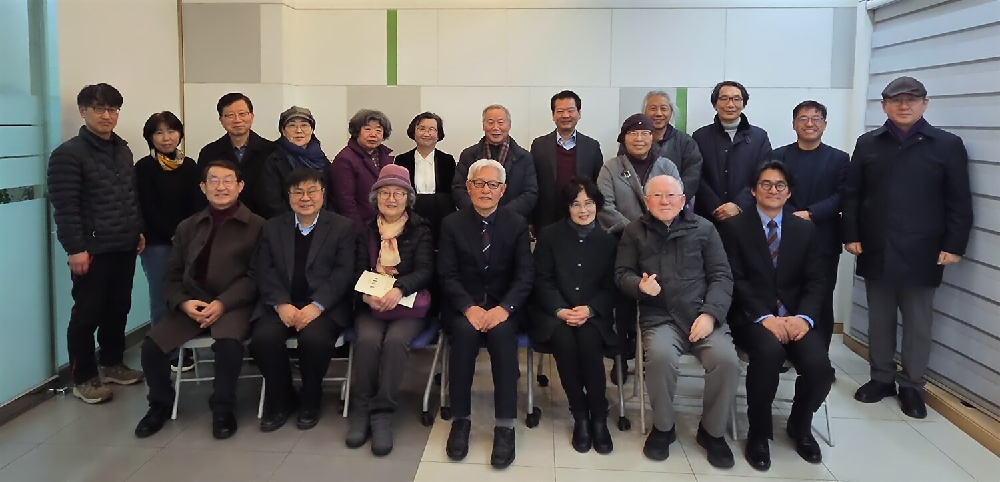
정기총회 후 기념 촬영
총회는 2025년 사업을 점검했습니다. 감사보고는 기존 사업이 꾸준히 이어졌고 특히 카자흐스탄 고려인 사업이 크게 진전되었다고 평가했습니다. 2025년에는 고려인 후원 사업에 후원자들의 지정 후원이 크게 모였습니다. 감사는 대림절 묵상집 집필자 워크숍, 사순절 묵상집의 새신자 교육 교재화, 말씀의 잔치 확대, 한인 디아스포라 연구서 출간을 제안했습니다.
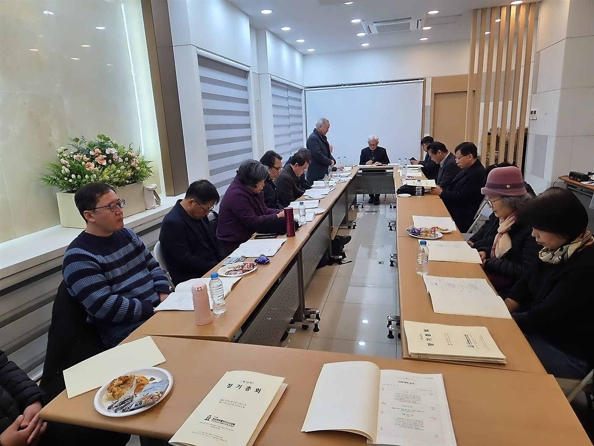
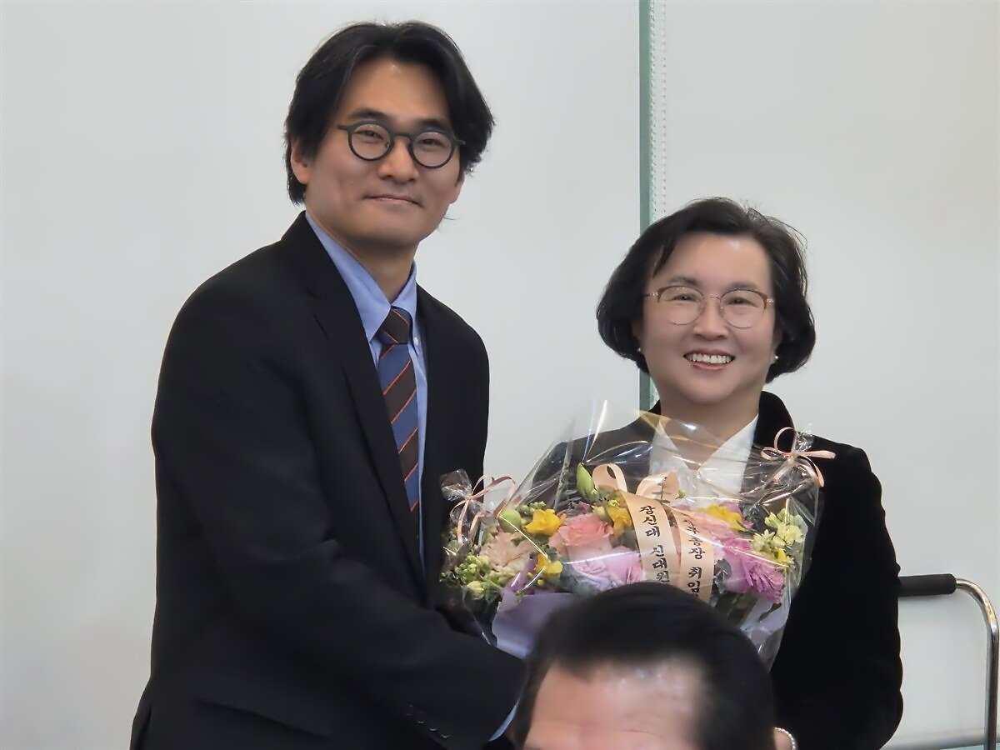
회순에 따른 보고와 안건 토의 | 신임 사무총장 취임을 축하하는 꽃다발 전달
신임 사무총장의 과제법인의 역사 정리와 홈페이지 연혁 반영, 화요일 말씀의 잔치와 묵상집 출간 지속, 평화학의 관점에서 다층적인 평화 연구와 교육.
평화교실
2월 평화교실 「희년신앙」
2026년 2월 24일(화) 오전 11시 · 기독교회관 306호 · 발표 김철호 목사(희년빚탕감상담소 소장)
평화교실은 한국교회의 평신도와 목회자를 위한 평화 공부 모임입니다. 2월의 주제는 경제 평화, 곧 희년 신앙이었습니다. 참석자에게 강의 자료를 제공했고, 저자 서명 도서를 증정했으며, 다과와 점심을 나누며 질의응답을 이어갔습니다.
강의 내용「빚진 죄인」이라는 오래된 인식을 성서의 희년 전통으로 다시 읽었습니다. 출애굽기 21~23장의 다섯 가지 행동법규(빚 탕감과 채무 노예 해방, 이자 금지와 약자 돌봄, 정의로운 재판, 안식일·안식년, 토지의 공공성)를 소개하고, 예수의 하나님나라 운동이 이 전통을 잇는 것임을 설명했습니다.
적용희년빚탕감상담소의 무료 상담 사례를 통해 교회가 경제적 위기에 놓인 이웃과 어떻게 함께할 수 있는지 논의했습니다.
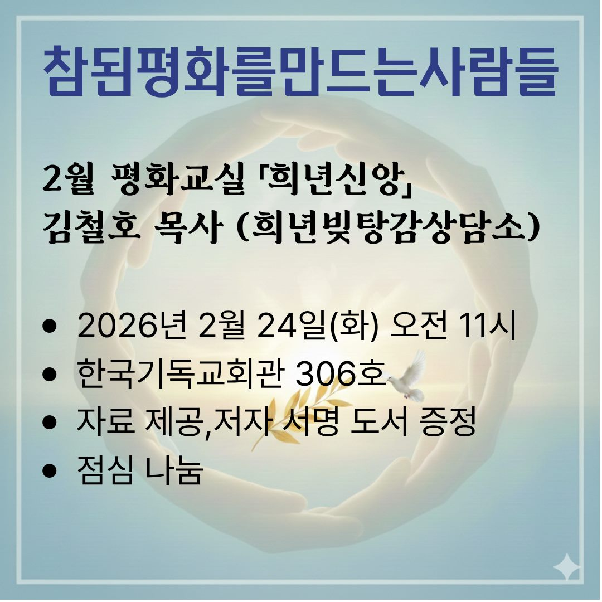
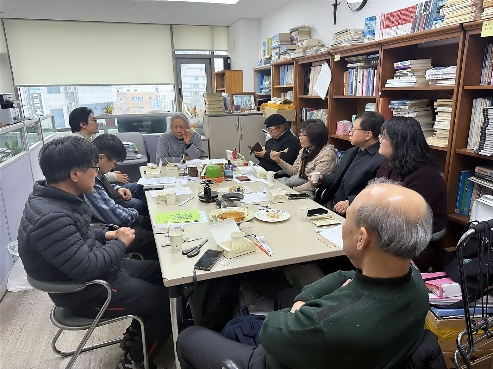
2월 평화교실 안내 | 법인 사무실에서 열린 평화교실(2월 24일)
절기 · 해외 협력
재의 수요일, 사순절 시작과 네팔 지원
2월 18일 재의 수요일
2월 18일 재의 수요일과 함께 사순절이 시작되었습니다. 1월에 펴낸 묵상집을 후원자와 교회에 발송했습니다. 네팔에서는 현지에서 필요한 물품을 구매해 보내는 일을 도왔습니다.
3월
MARCH · 2026고난의 길을 함께 걷다 사순절 · 소식지 발송 · 법인 보고
말씀 사역
사순절 · 고난주간 말씀의 잔치
3월 29일 고난주일 · 4월 5일 부활주일
화요일 말씀의 잔치는 사순절 본문에 맞춰 진행되었습니다. 고난주일(3월 29일)과 부활주일(4월 5일, 요한복음 20장) 본문을 앞두고 사무실에서 매주 설교 자료를 정리·출력해 설교 준비를 도왔습니다.
소식지
『평화세상』 173호 발송
3월 10일 · 국내 379부 · 해외(미국) 9부
1~2월의 사역과 후원자 명단을 담은 소식지 『평화세상』 173호를 국내외 후원자에게 우편으로 발송했습니다.
법인 보고
2025년 법인 운영 현황 보고
3월 · 통일부
통일부 소속 사단법인으로서 2025년 연도말 보고서와 운영상황 요약표, 법인 운영 현황 보고 공문을 정리해 제출했습니다. 3월에는 네팔 지원금도 전달했습니다.
4월
APRIL · 2026부활의 아침, 이어지는 만남 평화교실 · 봄 나들이 · 반가운 손님들
평화교실
4월 평화교실 「북한 선교」
2026년 4월 7일(화) · 법인 사무실 · 발표 김기찬 목사(높은뜻정의교회 교육목사)
김기찬 목사는 논문 「1970년대 조선그리스도교연맹의 재부상과 그 요인에 관한 연구」를 바탕으로 발표했습니다. 조선그리스도교연맹은 1946년 설립된 뒤 한국전쟁과 사회주의 개조 속에서 위축되었고 1960년대에는 침묵하다가 1974년에 공식 활동을 재개했습니다.
의미북한 교회에 대한 일방적 담론을 넘어 역사와 자료에 근거해 북한 기독교를 이해하려는 교육적 시도였습니다.
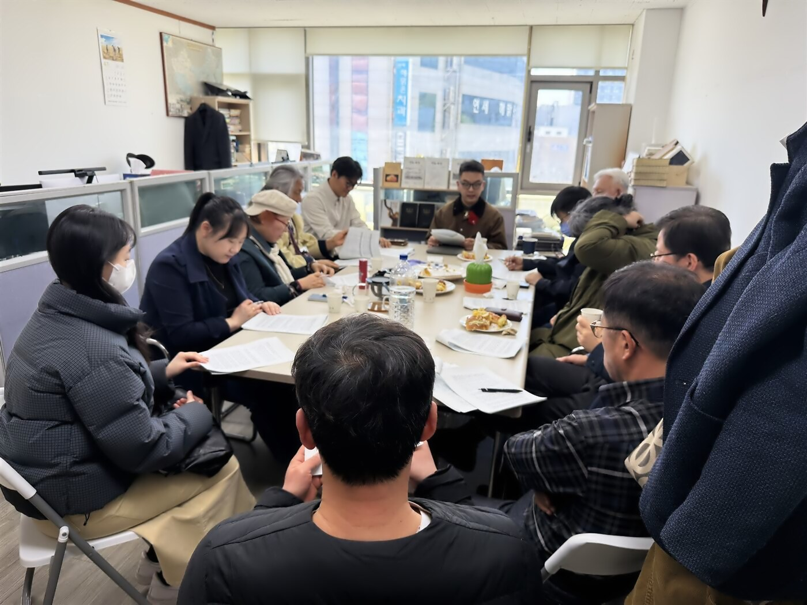
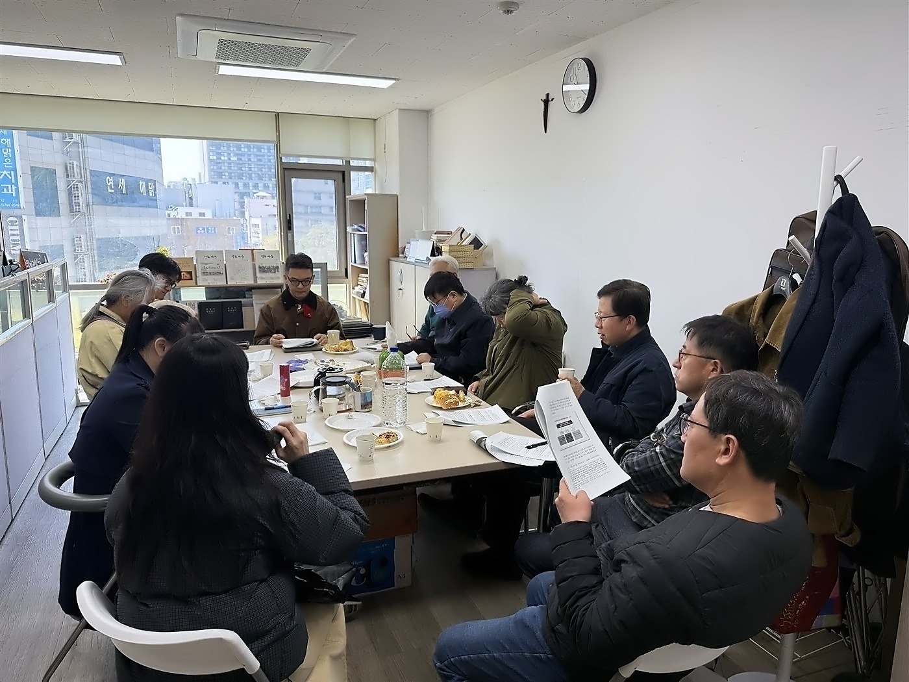
4월 7일 평화교실 | 발표 후 질의응답
친교
법인이사 봄 나들이
4월 13~14일 · 충남 부여 · 임규일 이사 초대
법인 이사들이 1박 2일로 부여를 다녀오며 법인의 지난 걸음과 앞으로의 일을 함께 나누었습니다.
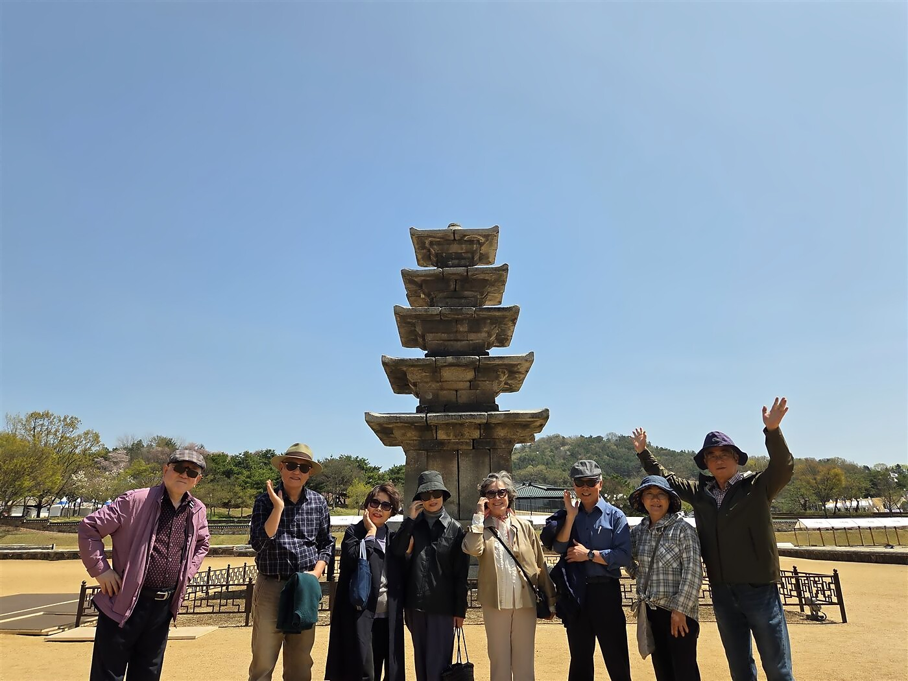
부여에서 함께한 법인 이사들
방문 · 협력
카자흐스탄 신학생 방문, 「따뜻한 밥상」 전지욱 목사 방문
4월 27일 · 4월 30일 · 법인 사무실
4월 27일 카자흐스탄 신학생들이 법인 사무실을 찾아 다과를 나누었습니다. 4월 30일에는 일산 백석동 「따뜻한 밥상」의 전지욱 목사가 방문했으며, 이곳은 소식지의 첫 광고 후원 기관이 되었습니다.
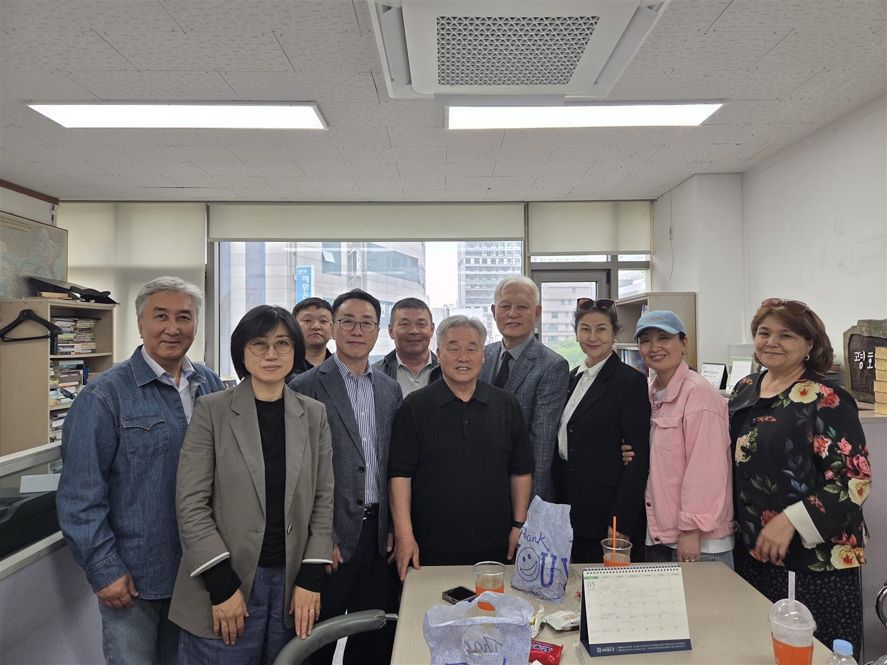
법인 사무실을 방문한 손님들
투명한 운영 · 해외 협력
기부금 모금·활용 실적 공개와 네팔 지원
4월 29~30일
2025년 연간 기부금 모금액·활용실적 명세서를 4월 29일 접수하고 홈페이지에 게시했습니다. 법인 홈페이지를 블로그 형태로 전환하는 방안도 협의했습니다. 네팔 지원금은 4월 29~30일에 선교사 이체와 물품 구매 대행으로 전달했고, 직원 연구·교육에도 참여했습니다.
5월
MAY · 2026손님을 맞고, 길을 준비하다 소식지 174호 · 말씀의 잔치 · 평화기행단 모집
소식지
『평화세상』 174호 발간
3~4월 사역 · 5월 발송
3·4월 사역과 후원자 명단을 담은 소식지를 발송했습니다. 법인 이사 이근복 목사가 한민족선교정책연구소 시절을 정리한 글을 실었고, 소식지 광고 후원란을 신설했습니다.
말씀 사역
말씀의 잔치 5월 본문
5월 12·19·26일 화요일 오후 2~4시 · 기독교회관 306호
부활절 이후 성서정과의 요한복음 본문(14:15-21, 17:1-11, 7:37-39)을 함께 읽었습니다. 진행은 김주용 사무총장이, 가이드는 이대성·홍상태 목사가 맡았습니다.
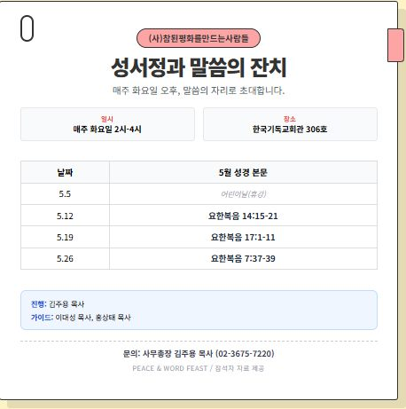
5월 성서정과와 말씀의 잔치 안내
방문 · 소통
윤신영 목사 방문 · 블로그 제작 · 후원자 감사 문자
5월 21일 · 5월 26일
5월 21일 동북아문화역사연구원장 윤신영 목사(전 법인 사무총장)가 사무실을 방문했습니다. 재단 블로그를 만들기 시작했고, 5월 26일에는 후원자들께 감사 문자를 보냈습니다.
해외 협력
카자흐스탄 평화기행단 모집
5월 소식지와 안내물로 모집
일 년에 한 번 카자흐스탄 평화기행을 통해 한국교회가 잊고 있던 고려인의 이야기를 이어 가려 합니다. 5월부터 기행단을 모집했고, 최종적으로 9월 27일 출발로 확정되었습니다.
6월
JUNE · 2026감사로 맞은 새로운 출발 평화교실 · 자문위원 위촉 · 감사의 날 · AI 강의
평화교실
6월 평화교실 「남북통일 운동의 이해」
2026년 6월 9일(화) 오전 11시 · 기독교회관 306호 · 발표 이우성 목사(수원성교회 교육목사)
북한이 남북을 「적대적 두 국가」로 규정하면서 기존 통일 담론이 길을 잃은 오늘, 일찍이 경계를 넘어 대화를 시도한 홍동근 목사(1926~2001)의 삶을 소개했습니다.
의미분단 시대 그리스도인이 누구인지 답하는 「평화를 만드는 신학」, 그리고 남북이 함께 나눌 수 있는 「한국 신학」을 준비하는 길을 살폈습니다.
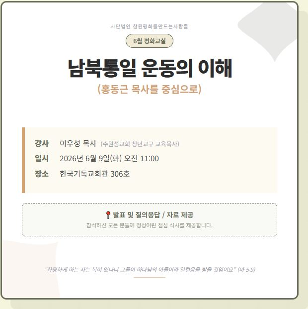
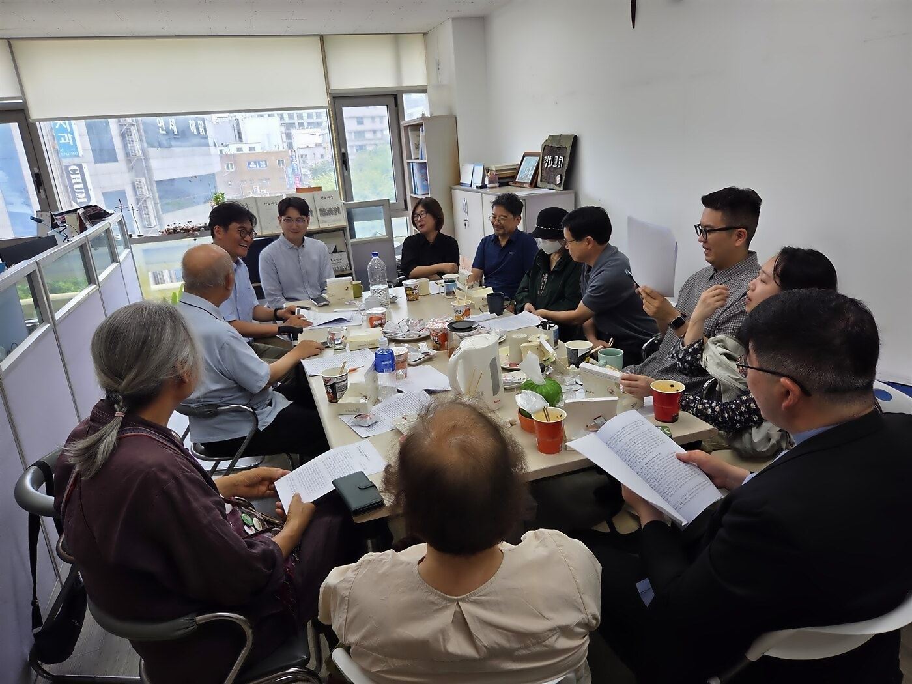
6월 평화교실 안내 | 6월 9일 평화교실
자문위원
홍승만 교수 자문위원 위촉
6월 9일(화) · 법인 사무실
평화교실 자리에서 서울기독대학교 홍승만 교수(목사)에게 자문위원 위촉장을 드렸습니다. 선교학 분야의 전문성을 법인의 연구와 교육에 보태 주실 것으로 기대합니다.
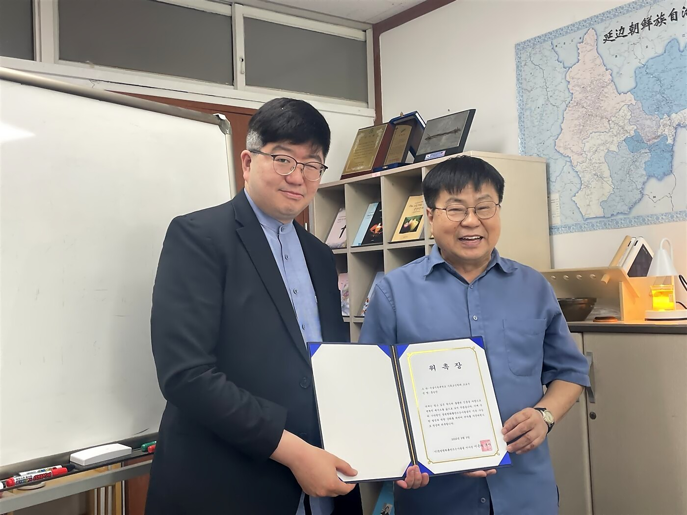
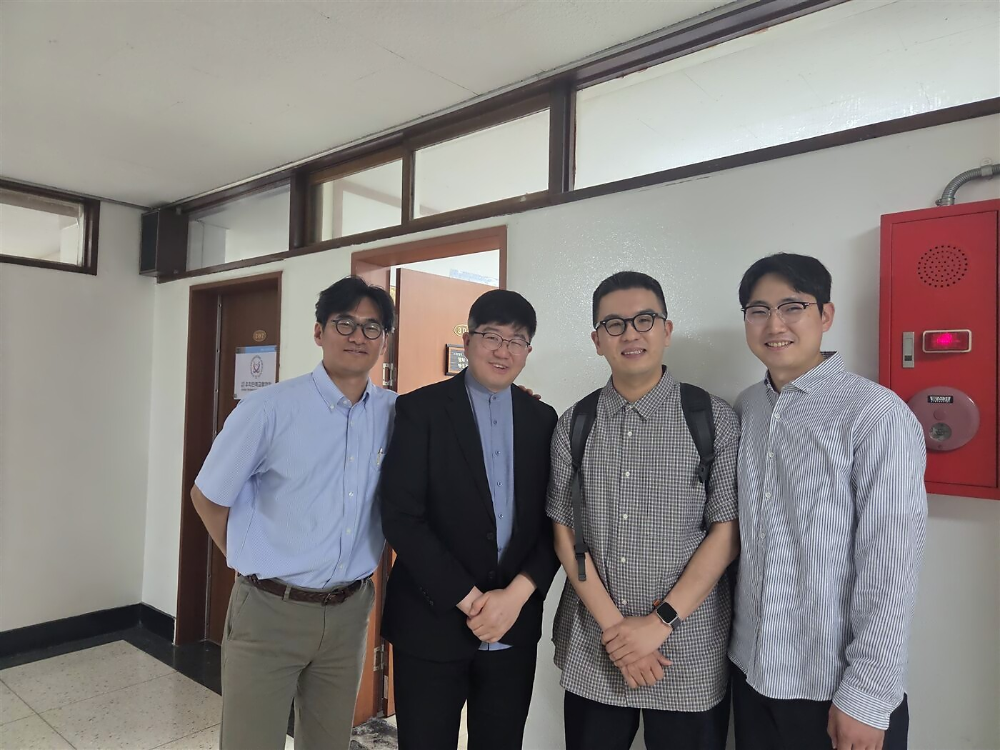
자문위원 위촉장 수여 | 위촉식과 평화교실을 마치고
감사의 날
법인 도서·자료 이전 감사의 날
6월 11일(목) 오전 11:30 · 생명살림교회(서울 강북구)
법인이 오랫동안 쌓아 온 도서와 자료를 생명살림교회(홍상태 목사)로 옮기며 그 수고에 감사를 전했습니다. 1부는 감사 나눔과 현판식, 이사장의 기도, 2부는 식사와 교제로 진행했습니다.
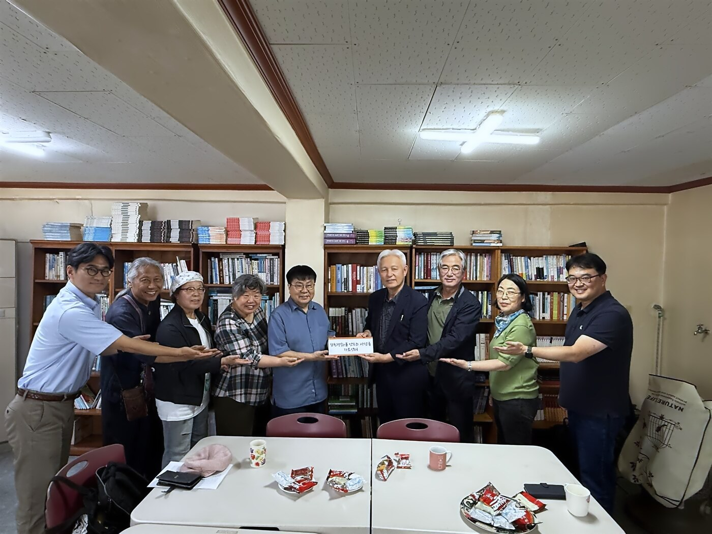
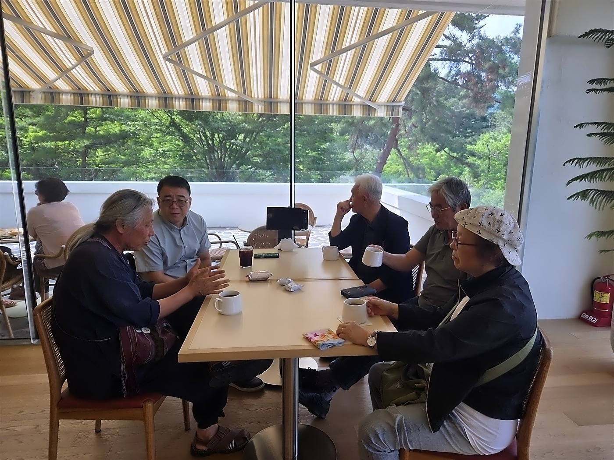
감사의 마음을 전하는 자리 | 2부 식사와 교제
평화교실
「나의 목회 비서 AI」 — 목회 코파일럿 활용 기초
6월 16일(화) · 법인 사무실 · 강의 김성국 목사(법인 간사)
법인 간사가 목회 코파일럿으로 AI를 설교 준비와 행정에 쓰는 기초를 1:1로 안내했습니다.
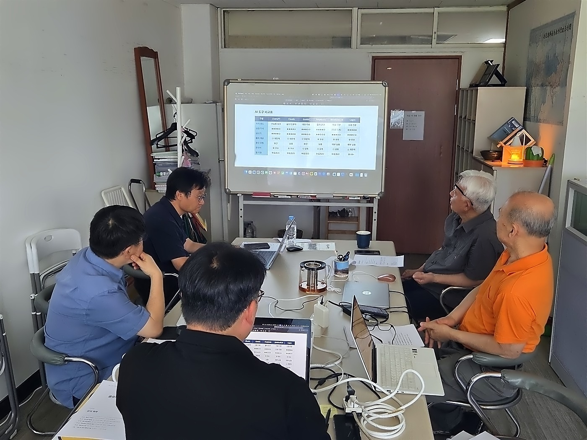
AI 활용 기초 강의 현장
그 밖에6월 30일 네팔 지원금을 전달했고, 연간 기부금 모금·활용실적 명세서를 블로그에도 게시했습니다.
7월
JULY · 2026온라인으로 더 가까이 소식지 175호 온라인 발행 · 정례 모임
소식지
『평화세상』 175호, 온라인 첫 발행
5~6월 사역 · 7월 초
175호부터 소식지를 온라인으로 발행해 더 많은 후원자와 더 자주 만나도록 했습니다. 사무총장의 여는 글, 이사장의 편지, 6월 평화교실 강의, 홍동근 목사 연보, 간사의 편지, 6월 법인 소식과 후원자 명단을 실었습니다.
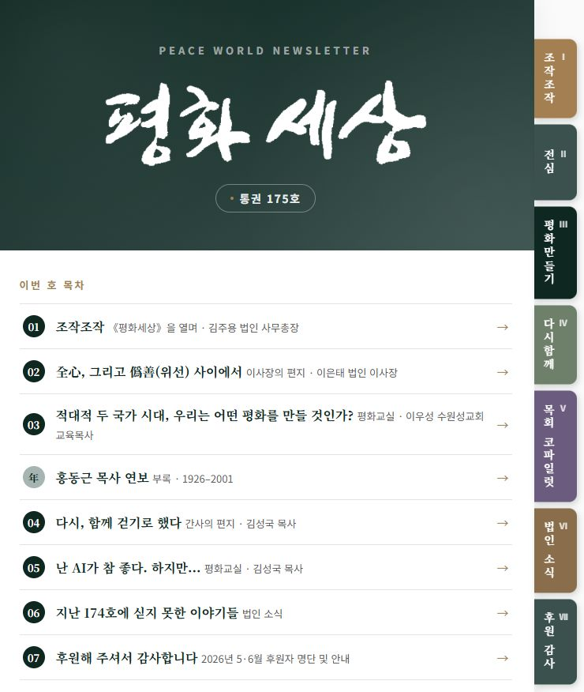
온라인으로 발행한 『평화세상』 175호
정례 모임
화요일 · 목요일 · 매월 마지막 주 금요일
법인 사무실
법인의 주간은 말씀과 평화로 짜여 있습니다. 화요일에는 성서정과 말씀의 잔치, 목요일에는 평화학 연구 모임(평화나무), 매월 마지막 주 금요일에는 회복적 정의를 배우고 실천하는 평화실천모임을 이어 가고 있습니다.
준비
카자흐스탄 항공권 구매와 후원자 관리
7월 15일 · 7월 22일
7월 22일 평화기행단의 항공권 10매를 구매했고, 9월 평화교실 홍보물을 준비했습니다. 신규 후원자 주소록을 정리해 소식지 발송 명단에 반영했습니다.
8월
AUGUST · 2026먼 길을 준비하는 여름 카자흐스탄 평화기행 준비 · 온라인 소통 확대
평화기행 준비
제4회 카자흐스탄 평화기행 준비
2026년 9월 27일(일) ~ 10월 3일(토), 6박 7일
참가
12명(남 8, 여 4) — 법인 실무자와 이사, 후원자
현지 협력
김상길 목사(알마티 시온교회, 카자흐스탄 선교 30주년), 김광선 목사, 김상욱 고려문화원장
준비
참가자 확정, 비행경비 정리, 기행단 핸드북(일정·비상연락처·현지 사역자 소개·고려인 역사 자료)
경비
참가자들이 별도 계좌에 낸 참가비로 운영하며 법인 사업비와 구분해 정산
법인이 가장 중요하게 준비하는 일은 카자흐스탄 박박티(Baqbaqty) 마을의 「고려인 기억박물관 및 공동체 센터」입니다. 마을에는 고려인 어르신들이 아직 살고 계시지만 젊은 세대는 도시로 떠나고 있어, 강제이주의 기억과 신앙·독립운동의 흔적이 기록되지 않으면 사라질 수 있습니다. 올해 평화기행은 현지 사역을 이어 가는 첫걸음입니다.
온라인 소통
새 홈페이지 준비와 소식지 안내 문자
8월 4일 이후 · 8월 12일
재단 홈페이지 템플릿을 선정해 새 홈페이지 제작을 준비했고, 8월 12일 후원자 195명에게 소식지 안내 문자를 보냈습니다. 말씀의 잔치는 웹자료로 제작해 공유했습니다.
9월
SEPTEMBER · 2026알마티로, 기억을 찾아서 제4회 카자흐스탄 평화기행 출발 · 네팔·카자흐스탄 지원
해외 협력
카자흐스탄 고려인 지원과 네팔 지원
9월 1일 · 9월 22일
네팔
9월 1일 선교사 이체 — 1~9월 9회 지원금 전달
장학금
9월 22일 독립운동가 후손 장학금 마련 — 평화기행 중 고려문화원 방문 일정에 전달
현판
「카자흐스탄 참된평화를만드는사람들」 현판 제작
법인 운영
9월 16일 1~8월 월별 장부를 세무법인에 제출
평화기행
제4회 카자흐스탄 평화기행 (1) — 알마티 · 고려문화원 · 우슈토베
9월 27일(일) ~ 29일(화)
9/27 (일)
인천 출발, 저녁 알마티 도착
9/28 (월)
침볼락 방문, 고려문화원에서 고려인 역사 강의와 간담회, 장학금·기부금 전달
9/29 (화)
우슈토베 방문 — 고려인 이야기 듣기, 방문 선물 나눔, 헌금 전달
※ 일정은 사전 계획과 현장 사진을 바탕으로 그렸으며, 현지 사정에 따라 일부 달라졌을 수 있습니다.
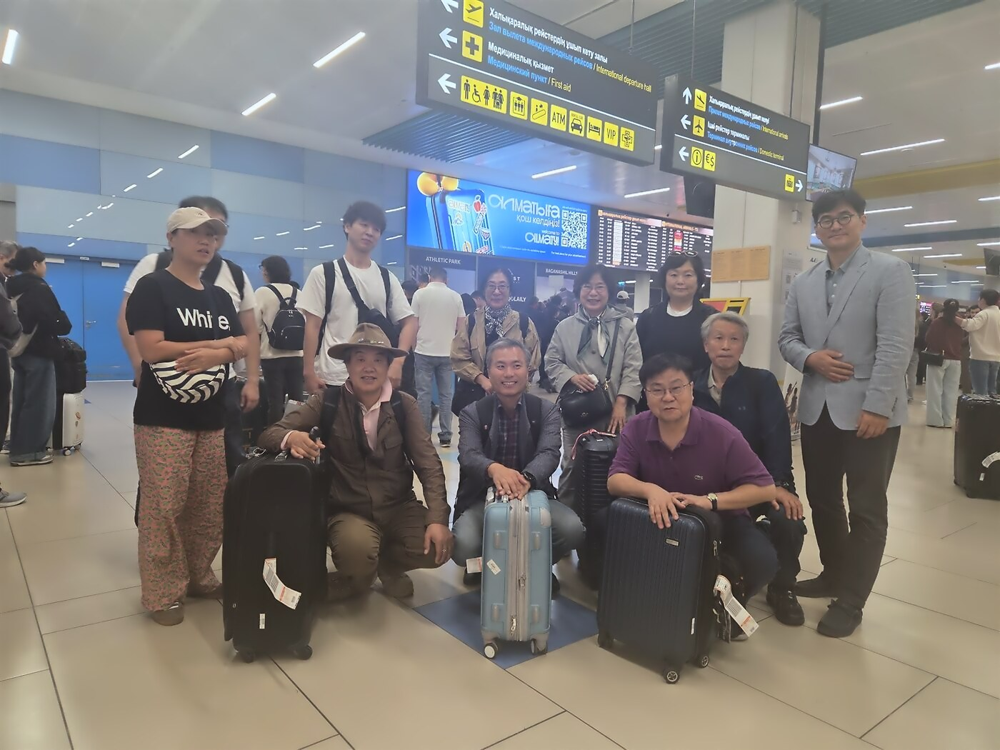
9월 27일, 알마티 공항에 도착한 기행단
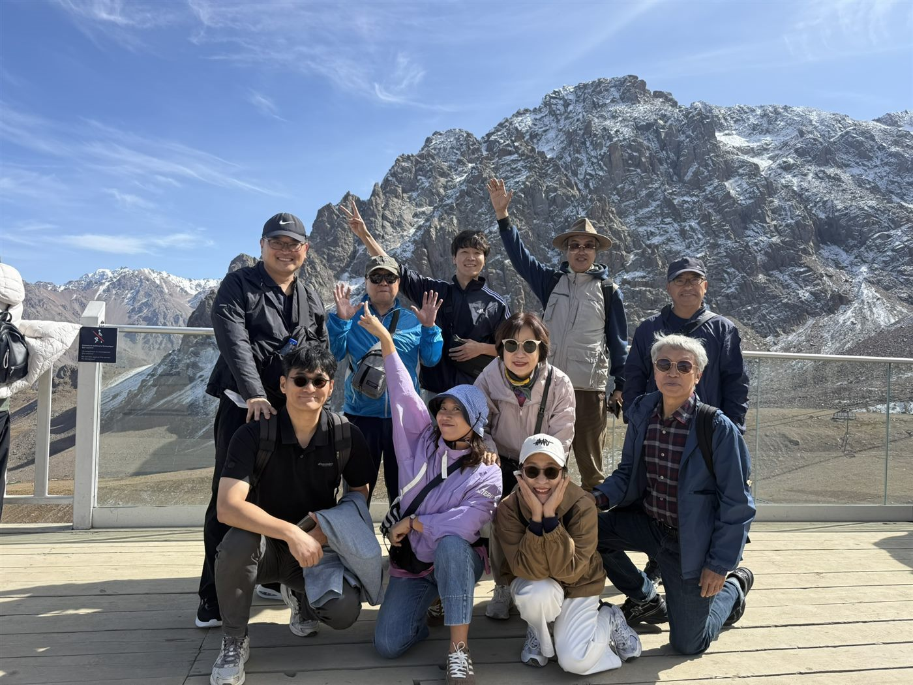
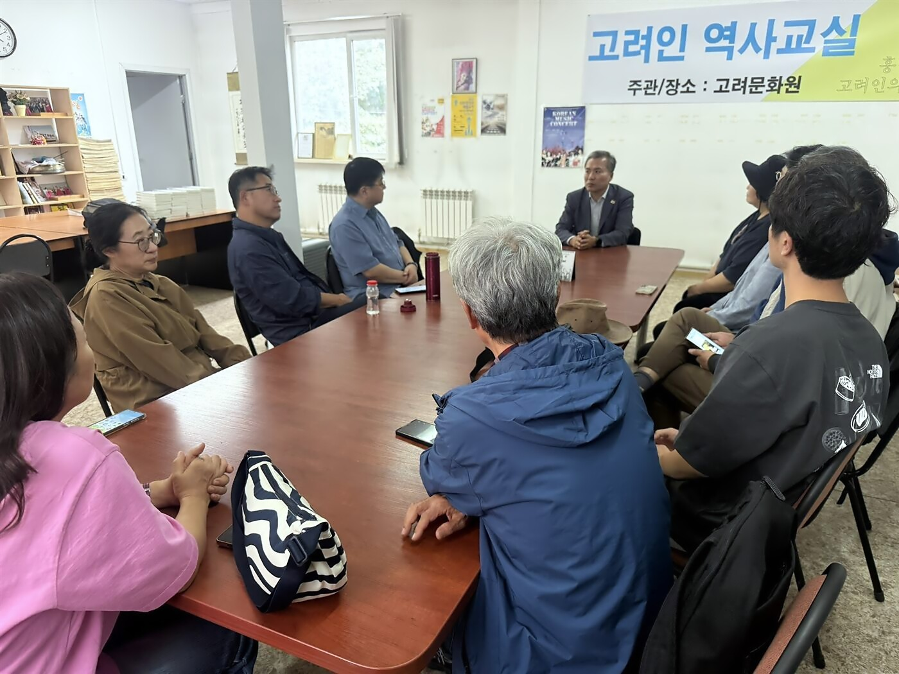
알마티 근교 침볼락 | 고려문화원 「고려인 역사교실」
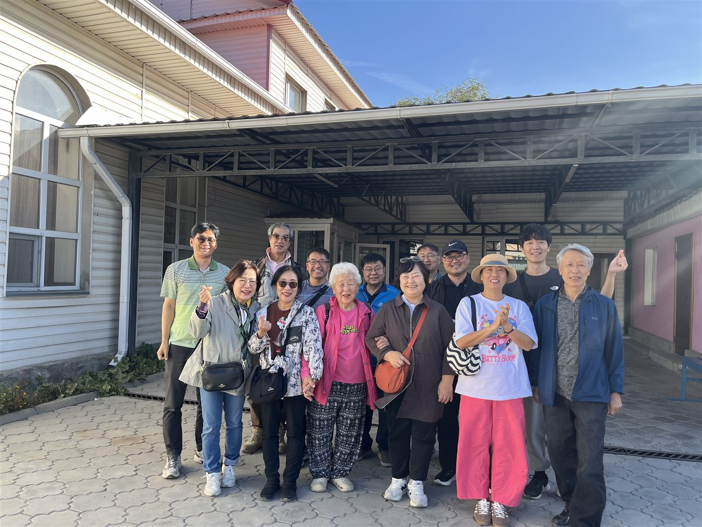
우슈토베 방문(9월 29일)
10월
OCTOBER · 2026평화기행을 마치고 제4회 카자흐스탄 평화기행 마무리 (10월 3일까지)
평화기행
제4회 카자흐스탄 평화기행 (2) — 자연과 교제, 현판식, 귀국
9월 30일(수) ~ 10월 3일(토)
9/30 ~ 10/1
쿨사이 호수, 차른 계곡, 카인디 호수
10/2 (금)
사과농장·시내 방문 후 감사의 시간, 카자흐스탄 법인 현판식
10/3 (토)
인천공항 도착, 6박 7일의 평화기행을 마침
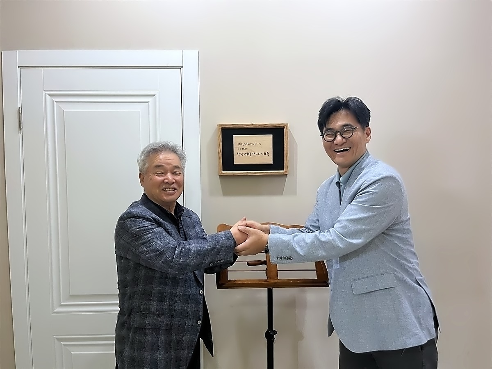
카자흐스탄 법인 현판식
남은 것고려인 후손과 현지 사역자를 직접 만나 지원 사업의 필요를 확인했고, 기억박물관과 장학 사업을 이어 갈 현지 협력 관계를 다졌습니다. 상세 결과 보고와 경비 정산은 별도로 정리합니다.
10월 초 행정9월 입출금 정리, 카자흐스탄 기행 입출금 정리, 직원 회의를 진행했습니다.
사단법인 참된평화를만드는사람들은 기독교 관점에서 평화 사역을 하기 위해서 설립된 NGO입니다. 평화를 만들기 위한 연구, 교육, 사업이 균형을 이룰 수 있도록 한국 사회와 동북 및 중앙 아시아 지역에 나눔과 봉사를 통해서 평화를 만들어 가고 있습니다.
1. 평화를 만드는 연구와 교육
1) 평화연구 — 평화와 통일을 위한 연구 / 평화 세미나, 평화를 만드는 기독교와 교회 연구
2) 평화교육 — 한민족 평화와 화해 교육, 평화 기행을 통한 평화 만들기 교육, 평화를 위한 회복적 정의 교육
2. 평화를 만드는 사역과 사업
1) 한인 디아스포라 지원 사업 — 중국 조선족 장학지원 사업, 카자흐스탄 고려인 석탄지원 사업, 고려인 독립운동가 후손 장학사업, 고려인 청소년 교류사업
2) 동포 나눔 사업 — 라진·선봉 지역 주민 쌀, 토끼, 오리 지원사업, 북한 오리농장 지원 사업
함께 하는 사람들
이 사 장이은태 · 제주제광교회 원로목사
부이사장이근복 · 목회자 마음돌봄센터 이사장
홍은해 · 부평소망교회 담임목사
법인이사고현영 · 수송교회 위임목사
임광빈 · 의주로교회 담임목사
임규일 · 만성교회 원로목사
임대식 · 평화교회 원로목사
홍인식 · 스페인개신교대학교(SETU) 교수
김종언 · 황지교회 위임목사
홍상태 · 생명살림교회 담임목사
법인감사이대성 목사(사업) / 한정훈 공인회계사(회계)
사무총장김주용 · 평화교회 담임목사
법인간사김성국 목사
연구실장홍상태 목사
법인연구원고현영 목사, 이대성 목사, 홍인식 목사
후원 안내
정기후원 — 후원자님의 은행 계좌에서 지정하신 날짜에 자동 이체됩니다. 일시후원 — 정기후원자를 포함한 모든 분들이 언제든 참여 가능합니다. 물품후원 — 도움이 절실히 필요한 한인 디아스포라 이웃에게 꼭 필요한 물품을 지원합니다.